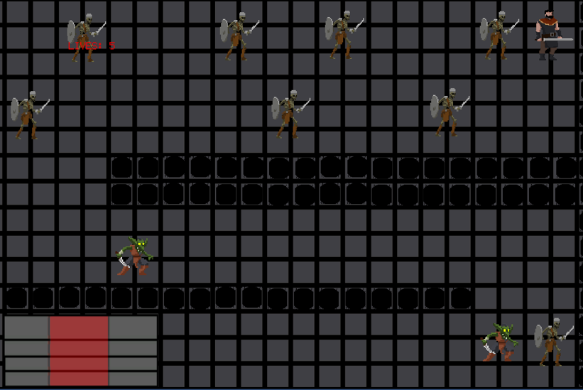

A 2D dungeon crawler, puzzle-like game created in Unity. Inspired by the popular video game Superhot.
This main concept of this game took inspiration from the popular video game Superhot, where the game does not progress unless the player is moving the character. I liked the concept of being able to notice my surroundings and predicting what will happen once I start my next move. The sprites for the main character and enemies were from a free package, while the background was something I created quickly using Photoshop.
The game is played using either the arrow keys or WASD on the keyboard. Once the player presses a button moving in a direction, the enemies also move in a predictable direction. The goblin's move horizontally based on the direction they are facing and the skeletons move vertically. Once the user makes it to the stairs at the end, they progress to the next level. If the player and an enemy land on the same spot, the player loses a life and starts the current level over again.